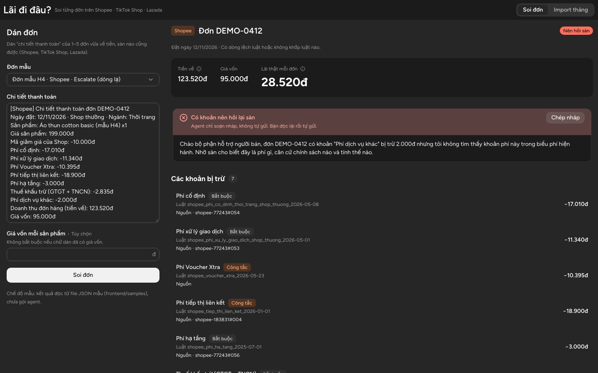
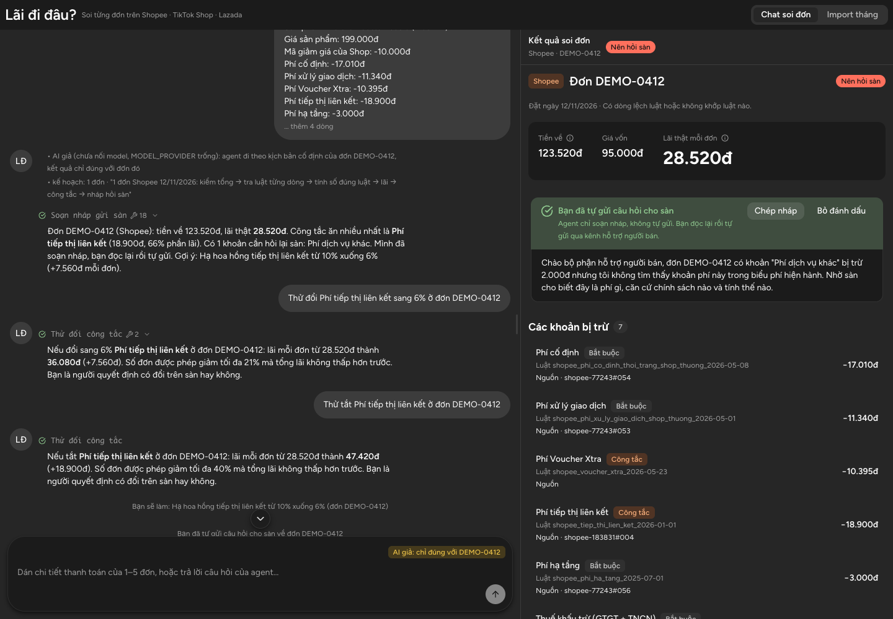

70,5% trong số đó là phí sàn · 28,4% nói rõ lỗ hoặc gần hết lãi
"…hiển thị rõ từng đơn: sản phẩm nào phát sinh phí Affiliate, Affiliate của ai, tỷ lệ bao nhiêu và số tiền bị trừ."Shopee Seller Center · 26/09/2026 · 1★
"…tổng phí trừ 133k khi tôi vào thắc mắc thì NV hỗ trợ ko trả lời được vì sao bị trừ nhiều như vậy."Shopee Seller Center · 26/06/2026 · 1★
"mé đơn 180k mà ăn tận 51k trong khi tik tok shop chỉ lấy phí 19k."Lazada Seller Center · 1★
| Hướng | Shop gặp | Lần / tháng | Phút / lần | Giờ / tháng | Chọn |
|---|---|---|---|---|---|
| A. Soi từng đơn đa sàn | ≈ 180.000 | 8 | 15 | ≈ 360.000 | ✔ |
| B. Chẩn đoán lãi cuối tháng | ≈ 180.000 | 1 | 90 | ≈ 270.000 | BigSeller, Sapo đã có |
| C. Tranh chấp hoàn hàng | 30/88 review | — | — | chưa tính được | quyết định thuộc sàn |
601.800 shop có đơn năm 2025 (Metric) × 30% bán ≥ 2 sàn. Tỉ lệ 30%, 8 lần, 15 phút là tự ước tính, sẽ kiểm bằng người dùng thử.
AI tự làm: tách dòng, chọn luật, chỉ công tắc ăn lãi, soạn nháp câu hỏi.
Người quyết: tắt hay chỉnh chương trình, gửi khiếu nại, đổi giá. Agent không bấm gì thay chủ shop.
Hai nguồn sự thật: fee_rules.csv để tính (91 luật, 3 sàn) · kho chính sách 3 sàn để trích dẫn.
Bảng phí: 3 luật chính thức, 8 báo chí, 80 giả định. Ghi rõ trên từng dòng.


Chat với agent qua AG-UI: dán đơn → agent gọi công cụ (hiện từng bước) → chủ shop thử đổi công tắc, chọn làm hay bỏ qua, ngay trên kết quả. Ca thường: đơn mẫu H4 (Escalate vì "Phí dịch vụ khác" 2.000đ không khớp luật nào → nháp câu hỏi gửi sàn). Ca khó: __ (Minh chọn từ benchmark). Mạng hỏng → video dự phòng: https://youtu.be/YjYLuxTKn5Q.
Đạt khi ≥ 90% dòng phí gắn đúng luật VÀ 100% con số khớp công cụ VÀ 100% câu từ chối bị từ chối.
| Chỉ số | Lượt 1 | Lượt 2 | Chuẩn |
|---|---|---|---|
| Dòng gắn đúng luật (Shopee · TikTok · Lazada) | __ | __ | ≥ 90% |
| Con số khớp output công cụ | __ | __ | 100% |
Câu tu_choi bị từ chối | __ | __ | 100% |
| Quyết định đúng (act / ask / escalate / refuse) | __ | __ | ≥ 85% |
| So chéo sàn chọn đúng sàn lãi nhất | __ | __ | ≥ 80% |
Bộ câu thử __ câu (≥ 8 mỗi sàn, ≥ 5 khó, ≥ 3 từ chối) · run ID __ / __ · một cải tiến giữa 2 lượt: __ · số do Minh cấp.
| Kịch bản | Shop dùng | Phiên / tháng | Chi phí / tháng | / shop / tháng |
|---|---|---|---|---|
| Thấp: shop từng bị trừ phí lạ | 1.800 | ≈ 7.200 | __ | __ |
| Cơ sở: soát đơn mỗi tuần | 9.000 | ≈ 72.000 | __ | __ |
| Cao: đi kèm công cụ đa kênh | 27.000 | ≈ 216.000 | __ | __ |
So với thứ shop lấy lại: ~2 giờ soát đơn / tháng (tự ước tính) + khoản thu sai phát hiện được (data demo: 4 đơn Voucher Xtra vượt trần, thu dư 25.350–51.800đ mỗi đơn).
Số lượng shop là tự ước tính trên ~180.000 shop đa sàn · chi phí do Thái chạy python run.py simulate (≥ 50 phiên, ≥ 2 model), đã chia cho tỉ lệ đạt.
Pain có thật: 88/900 review than về tiền, tập trung ở phí trên từng đơn (trang 1).
Đúng hay chưa: lượt 2 đạt __ so với chuẩn (trang 5).
Có đáng tiền không: __đ / shop / tháng so với ~2 giờ tiết kiệm được (trang 6).
Vì sao chưa "go": bảng phí còn 80/91 luật giả định, chưa có người bán thật dùng thử.
Người nói: trang 1–2 Hà · 3 Huy · 4 Hà + Huy · 5 Minh · 6 Thái · 7–8 Minh (nhóm chốt)